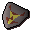

Sir Harry
| Config name | upass_paladin3 |
| NPC id | 990 |
| Combat level | 62 |
| Hitpoints | 57 |
| Attack / Strength / Defence | 54 / 54 / 54 |
| Options | Talk-to, Attack |
| Wander range | 5 tiles from spawn |
| Max range | 7 tiles from spawn |
| Defined in | scripts/quests/quest_upass/configs/upass.npc |
| Bonuses | Attack bonus 20, Strength bonus 22, Stab def 87, Slash def 84, Crush def 76, Magic def -10, Range def 79 |
Sir Harry
A mighty looking warrior.
Show all 1 spawn on the world map → Open in knowledge graph →
Drops
Drop script: scripts/quests/quest_upass/scripts/sir_harry.rs2 (specific handler)
Always dropped
| Item | Quantity | Rarity | Notes |
|---|---|---|---|
 Paladin's badge | 1 | Always | if inv_total(inv, paladinbadge3) = 0 |
Drop table
| Item | Quantity | Rarity | Notes |
|---|---|---|---|
| 48 | 5/16 (31.25%) | ||
| 15 | 19/128 (14.84%) | ||
| 2 | 1/8 (12.5%) | ||
| 30 | 13/128 (10.16%) | ||
| 8 | 5/64 (7.81%) | ||
| 1 | 9/128 (7.03%) | ||
| Herb drop table table | see table | 1/16 (6.25%) | |
| 1 | 1/64 (1.56%) | ||
| 120 | 1/64 (1.56%) | ||
| Gem drop table table | see table | 1/64 (1.56%) | |
| 1 | 1/128 (0.78%) | ||
| 1 | 1/128 (0.78%) | ||
| 1 | 1/128 (0.78%) | ||
| 1 | 1/128 (0.78%) | ||
| 1 | 1/128 (0.78%) |
Tertiary drops
| Item | Quantity | Rarity | Notes |
|---|---|---|---|
| Clue scroll (medium) | 1 | 1/128 (0.78%) | members |
Locations
| Area | Coordinates | Level | Count | Map |
|---|---|---|---|---|
| Underground Pass (underground) | 2426, 9718 | 0 | 1 | view |
Dialogue
PlayerHello.
PlayerGood day.
Sir HarryWatch your back, the undead are about here...
Quests
Referenced in scripts
scripts/quests/quest_upass/scripts/sir_harry.rs2